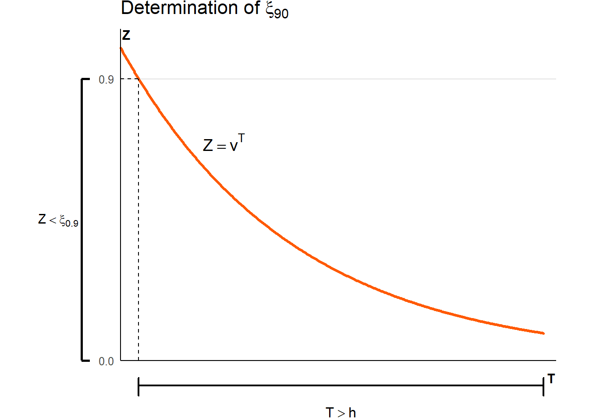

2 Life Insurance Models
2.1 Supplementary Concepts
The random variable \(Z\) represents the present value of a benefit that will be payable upon death. For example, if a unit is paid on death, then \(Z=v^T\), where \(T\) is the random variable of future lifetime at age \(x\).
The expected value of \(Z\) represents the actuarial present value of a unit payable at the moment of death. For example, for a coverage that spans the whole lifetime,
where \(_tp_x\mu_{x+t}\) is the probability density function of \(T=T(x)\), and the symbol \(\bar A_x\) conforms with the International Actuarial Notation.
- The following table shows common life insurance covers. In all cases, a death benefit of \(1\) is payable at the moment of death.
| Type | \(Z\) | Range | \(\mathrm{E}[Z]\) | Notes |
|---|---|---|---|---|
| Whole life | \(v^T\) | \(T>0\) | \(\bar{A}_x\) | Lifetime coverage |
| \(n\)-year term |
\(v^T\) \(0\) |
\(T \leq n\) \(T > n\) |
\(\bar A_{\overset{1}{x}:{\enclose{actuarial}{n}}}\) | Temporary death benefit |
| \(n\)-year pure endowment |
\(0\) \(v^n\) |
\(T \leq n\) \(T > n\) |
\(A_{x:\overset{1}{\enclose{actuarial}{n}}}\) | Survival benefit |
| \(n\)-year endowment |
\(v^T\) \(v^n\) |
\(T \leq n\) \(T > n\) |
\(\bar A_{{x}:{\enclose{actuarial}{n}}}\) | Combination of temporary death benefit and survival benefit |
- To calculate percentiles of \(Z\) we use the fact that \(Z=v^T\) and use the probability density function of \(T\), not that of \(Z\) (since we don’t have it). The graph below illustrates the calculation of \(\xi_{90}\), the \(90^{\text{th}}\) percentile of \(Z\). We find an event for \(T\) that corresponds to \(\xi_{90}\). That event is \(_hp_x\).
For the discrete case, benefits are paid at the end of the year of death. For example, if a unit is paid at the end of the year of death, then \(Z=v^{K+1}\), where \(K\) is the random variable of complete years of future lifetime at age \(x\).
Analogously to \(\#2\) above, the expected value of \(Z\) represents the actuarial present value of a unit payable at the end of the year of death. For example, for a coverage that spans the whole lifetime,
where \(_{k|}q_x\) is the probability mass function of \(K=K(x)\) and the symbol \(A_x\) conforms with the International Actuarial Notation.
- The following table shows common life insurance covers. In all cases, a death benefit of \(1\) is payable at the end of the year of death.
| Type | \(Z\) | Range | \(\mathrm{E}[Z]\) | Commutation Functions | Notes |
|---|---|---|---|---|---|
| Whole life | \(v^{K+1}\) | \(K = 0, 1,\cdots\) | \(A_x\) | \(\dfrac{M_x}{D_x}\) | Lifetime coverage |
| \(n\)-year term |
\(v^{K+1}\) \(0\) |
\(K = 0, 1, \cdots, n-1\) \(K = n, n+1, \cdots\) |
\(A_{\overset{1}{x}:{\enclose{actuarial}{n}}}\) | \(\dfrac{M_x-M_{x+n}}{D_x}\) | Temporary death benefit |
| \(n\)-year pure endowment |
\(0\) \(v^n\) |
\(K = 0, 1, \cdots, n-1\) \(K = n, n+1, \cdots\) |
\(A_{x:\overset{1}{\enclose{actuarial}{n}}}\) | \(\dfrac{D_{x+n}}{D_x}\) | Survival benefit |
| \(n\)-year endowment |
\(v^{K+1}\) \(v^n\) |
\(K = 0, 1, \cdots, n-1\) \(K = n, n+1, \cdots\) |
\(A_{{x}:{\enclose{actuarial}{n}}}\) | \(\dfrac{M_x - M_{x+n} + D_{x+n}}{D_x}\) | Combination of temporary death benefit and survival benefit |
- How does \(\bar{A}_x\) (benefit payable at the moment of death) relate to \(A_x\) (benefit payable at the end of the year of death)? The procedure below illustrates the relationship.
Note that \({_s}p_{x+k}\,\mu_{x+k+s}\) can be replaced with \(q_{x+k}\) under the assumption that deaths are uniformly distributed over the year of age.
- The “Commutation Functions” column in the table above represent calculation algorithms that are easily programmable. Consider how these commutation functions are used below:
where
\[ \boxed{ \begin{array}{rl} \\ \quad D_x &= v^x\,l_x \quad \\ \quad M_x &= \displaystyle \sum_{k=0}^{\infty} v^{x+k+1}\,d_{x+k} \quad \\ \\ \end{array} } \]
2.2 Solved Exercises
Endowment
You are given:
\(A_{50:{\enclose{actuarial}{3}}}=0.88913\), calculated at \(i=4\%\)
\(q_{50}=0.00121\)
Calculate \(A_{50:{\enclose{actuarial}{3}}}\) using instead \(i^*=5\%\).
NoteSolution
Recall that an endowment is a combination of a term insurance and a survival benefit.
\(A_{50:{\enclose{actuarial}{3}}}=\underbrace{\sum_{k=0}^2 v^{k+1}\,{}_{k|}q_{50}}_{\textit{term insurance}}+\underbrace{v^3\,{}_3p_{50}\vphantom{\sum_{k=0}^2v^{k+1}\,{}_{k|}q_{50}}}_{\textit{survival benefit}}\)
Also recall that \({_{k|}}q_{50}={_k}p_{50}\,q_{50+k}\;\) and that \(\;{_k}p_x=p_x\,p_{x+1}\cdots p_{x+k-1}\).
Then
\[\begin{align} A_{50:{\enclose{actuarial}{3}}} &= vq_{50}+v^2p_{50}\,q_{51}+v^3p_{50}\,p_{51}\,q_{52} + v^3p_{50}\,p_{51}\,p_{52} \\ \\ &= vq_{50}+v^2p_{50}\,q_{51}+v^3p_{50}\,p_{51}(q_{52} + p_{52}) \\ \\ &= vq_{50}+v^2(1-q_{50})q_{51}+v^3(1-q_{50})(1-q_{51}) \\ \\ \end{align}\]
Using \(i=0.04\), the equation above solves for
\(q_{51}=\dfrac{A_{50:{\enclose{actuarial}{3}}}-vq_{50}-v^3(1-q_{50})}{v^2(1-q_{50})-v^3(1-q_{50})}=0.00129\)
Then, using \(i^*=0.05\),
\(A_{50:{\enclose{actuarial}{3}}}=vq_{50}+v^2(1-q_{50})q_{51}+v^3(1-q_{50})(1-q_{51})=0.864\)
\(\\\)
Characteristics of \(Z\)
A whole life insurance issued at age \(x\) pays \(100{,}000\) at the moment of death.
Assume \(\mu_x=0.01{,} \forall x\) and a constant force of interest \(\delta=0.02\).
Compute the following amounts:
- The actuarial present value of the death benefit
- The standard deviation of \(Z\)
- The median of \(Z\)
- The probability that \(Z\) will exceed \(\bar{A}_x\)
- The probability that the total premium charged to a portfolio of \(1000\) independent policyholders of age \(x\) will be sufficient to pay the promised benefit
- The individual premium that ensures that the insurance company will make a profit \(95\%\) of the time from the portfolio above
NoteSolution
For simplicity, let’s work with \(1\) unit of sum assured.
- The actuarial present value of \(Z\) is given by
\[\begin{align} \bar{A}_x &= \mathrm{E}[\,Z\,] \\ \\ &= \mathrm{E}[\,v^T\,] \\ \\ &= \int_0^\infty v^t\,{_t}p_x\,\mu_{x+t}\,dt \\ \\ \end{align}\]
However, since \(\mu_x=0.01\) does not depend on age, we have \({_t}p_x=\exp{(-\mu t)}\). Thus,
\[\begin{align} \bar{A}_x &= \mathrm{E}[\,Z\,] \\ \\ &= \int_0^\infty v^t\,{_t}p_x\,\mu_{x+t}\,dt \\ \\ &= \int_0^\infty e^{-\delta t}\,e^{-\mu t}\, \\ \\ &= \left. -\dfrac{\mu}{\mu + \delta}\,e^{-t(\mu + \delta)} \right|_0^{\infty} \\ \\ &= \dfrac{\mu}{\mu + \delta} \\ \\ &= \dfrac{0.01}{0.01 + 0.02} \\ \\ &= 0.3\overline{3} \\ \\ \end{align}\]
Then, the actuarial present value of \(100\,000\) of sum assured is \(33\,33\overline{3}\)
- The standard deviation is the square root of the variance, but \(\mathrm{Var}[\,Z\,]=\mathrm{E}[\,Z^2\,]-(\mathrm{E}[\,Z\,])^2\). Note that since \(\mathrm{E}[\,Z\,]=\mathrm{E}[\,v^T\,]=\mathrm{E}[\,e^{-\delta T}\,]=\dfrac{\mu}{\mu+\delta}\), then we can easily conclude that \(\mathrm{E}[\,Z^2\,]=\mathrm{E}[\,v^{2T}\,]=\mathrm{E}[\,e^{-2 \delta T}\,]=\dfrac{\mu}{\mu+2 \delta}\).
Therefore,
\[\begin{align} \mathrm{Var}[\,Z\,]&=\mathrm{E}[\,Z^2\,]-(\mathrm{E}[\,Z\,])^2 \\ \\ &= \dfrac{\mu}{\mu+2 \delta} - \left( \dfrac{\mu}{\mu+\delta} \right)^2 \\ &= \dfrac{0.01}{0.01+2(0.02)} - \left( \dfrac{0.01}{0.01+0.02} \right)^2 \\ &= 0.08\overline{8} \\ \\ \end{align}\]
\(\therefore \sigma_Z = \sqrt{0.08\overline{8}} = 0.29814\)
Then, the standard deviation for \(100{,}000\) of sum assured is \(29\,814\).
- The median of the distribution of a random variable is equivalent to the \(50^{th}\) percentile of the distribution. Let \(\xi_{50}\) be the \(50^{th}\) percentile of \(Z\). Then we can solve the equation \(\mathrm{Pr}[\,Z \leq \xi_{50}\,] = 0.5\) for \(\xi_{50}\).
Although we could proceed directly from \(\mathrm{Pr}[\,Z \leq \xi_{50}\,] = \int_0^{\xi_{50}} {_t}p_x\,\mu_{x+t}\,dt = 0.5\), it is generally more convenient to work with the distribution of \(T\), as follows:
\[\begin{align} \mathrm{Pr}[\,Z \leq \xi_{50}\,] &= \mathrm{P}[\,v^T \leq \xi_{50}\,] \\ \\ &= \mathrm{Pr}[\,e^{-\delta T} \leq \xi_{50}\,] \\ \\ &= \mathrm{Pr}[\,T > \underbrace{\dfrac{\log {\xi_{50}}}{-\delta}\,]}_{h} \\ \\ &= \mathrm{Pr}[\,T > h\,] \\ \\ &= {_h}p_x \\ \\ &= e^{-\mu h} \\ \\ &= 0.5 \\ \\ \end{align}\]
Therefore, \(h=\dfrac{\log {0.5}}{-\mu}=\dfrac{\log {0.5}}{-0.01}=69.31472\)
\(\therefore \xi_{50} = \exp{\left(-\delta h \right)}=\exp{\left(-0.02 \cdot 69.31472 \right)}=0.25\)
Then, the \(50^{th}\) percentile of present value of \(100\,000\) of sum assured is \(25\,000\).
- We calculate \(\mathrm{Pr}[\,v^T>\bar{A}_x\,]\) as follows:
\[\begin{align} \mathrm{Pr}[\,Z > \bar{A}_x\,] &= \mathrm{P}[\,v^T > \bar{A}_x\,] \\ \\ &= \mathrm{Pr}[\,e^{-\delta T} > \bar{A}_x\,] \\ \\ &= \mathrm{Pr}[\,T > \underbrace{\dfrac{\log {\bar{A}_x}}{-\delta}\,]}_{h} \\ \\ &= \mathrm{Pr}[\,T > h\,] \\ \\ &= {_h}p_x \\ \\ &= e^{-\mu h} \\ \\ \end{align}\]
Therefore, \(\dfrac{\log {\bar{A}_x}}{-\delta}=\dfrac{\log {0.3\overline{3}}}{-0.02}=54.39306\)
Then, \(\mathrm{P}[\,v^T>\bar{A}_x\,]=\exp \left( -\mu h \right) =\exp \left( -0.01\cdot 54.39306 \right) =0.57735\)
- Since there are \(1\,000\) independent policyholders, let’s define \(Z_i\) as the present value of the death benefit for the \(i^{th}\) policyholder. Then \(S=\sum_{i=1}^{1000} Z_i\).
Given that all policyholders have the same age, \(Z_i=Z{,} \forall i\). Then under the assumption of independence, \(\mathrm{E}[\,S\,]=1\,000 \, \mathrm{E}[\,Z\,]\) and \(\mathrm{Var}[\,S\,]=1\,000 \, \mathrm{Var}[\,Z\,]\).
From 1. and 2. above, \(\mathrm{E}[\,Z\,]=0.3\overline{3}\) and \(\mathrm{Var}[\,Z\,]=0.08\overline{8}\), therefore \(\mathrm{E}[\,S\,]=333.3\overline{3}\) and \(\mathrm{Var}[\,Z\,]=88.8\overline{8}\).
Analitically, we need to collect a total premium \(\Pi\) such that \(\mathrm{P}[\,S<\Pi\,] = 0.95\)
Using a normal approximation,
\[\begin{align} \mathrm{Pr}[\,S<\Pi\,] &= \mathrm{Pr} \left[ \,\dfrac{S-\mathrm{E}[\,S\,]}{\sigma_s}<\dfrac{\Pi-\mathrm{E}[\,S\, ]}{\sigma_s}\, \right] \\ \\ \end{align}\]
\(\\\)
2.3 Supplementary Exercises
2.1
Let \(\mathrm{E}[X]={_{m|}}\overline{A}_{26}\), \(\mathrm{median}[Z]=0.45289\), and \(i=2\%\).
Calculate the deferment period \(m\) assuming De Moivre’s law with \(\omega =96\).
2.2
Let \(\mathrm{log}_{t}p_{x}=-0.04t\), \(t \geq 0\) and \(\delta=0.06\).
Compute the expected value of a \(10\)-year endowment insurance whose (term) death benefit is paid at the moment of death.
2.3
Let \(\delta=0.06\) and \(\mu_{x}=0.04\), \(\forall{x}\).
The present value of the sum assured is
\[ Z = \left\{ \begin{array}{ll} 0 & 0 \leq T \leq 5 \\ v^{T} & 5 < T \leq 25 \\ 0 & 25 < T \\ \end{array} \right. \]
Calculate the median of \(Z\).
2.4
Let \(v^{t}={_{t}}p_{x}\) for \(t \geq 0\) and \(10\,000\,{_{15|}}\bar{A}_{20}=1\,157\).
Calculate \(\delta\).
2.5
A \(5\)-year-old child has a life insurance policy whose present value of the sum assured is
\[ Z = \left\{ \begin{array}{ll} 0 & 0 \leq T \leq 5 \\ v^{T} & 5 < T \leq m+5 \\ 0 & m+5 < T \\ \end{array} \right. \]
Calculate \(m\) assuming De Moivre’s law (\(\omega=25\)), \(\delta=0.05\) and \(\mathrm{E}[Z]=0.30643\).
2.6
A \(20\)-year term life insurance is issued at age \(x\).
Let \(\mu_{x}=0.01\) for all \(x\) and \(\delta=0.08\).
Compute the \(90^{\text{th}}\) percentile of the distribution of the present value of the sum assured, if it is paid at the moment of death.
2.7
Let \(Z=v^{T}\), \(T \geq 0\), \(x=40\), and \(s(x)=1-\dfrac{x}{100}\).
If the \(k\)-th percentile of \(Z\) is \(e^{-0.36}\), calculate \(k\).
2.8
An ordinary life insurance of \(1\,000\,000\) is issued at age \(20\), based on \(\mu_{x}=0.02\) for all \(x\) and \(\delta=0.08\).
Calculate the probability that the present value of the sum assured lies within half a standard deviation of the expected value of the present-value random variable.
2.9
An ordinary life insurance with a benefit of \(50\,000\) payable at the moment of death is issued to \(1\,000\) independent insureds aged \(x\), subject to a force of mortality \(\mu_{x}=0.03\) for all \(x\). Let \(\delta=0.06\) and \(\Phi^{-1}(0.95)=1.645\).
Compute the minimum single net premium per person such that the probability of having sufficient funds to pay the benefits is approximately \(95%\).
2.10
Let \(l_x=1000(100-x)\), \(0 \leq x \leq 100\).
Compute the single net premium of a \(25\)-year term insurance issued at age \(40\), with benefit paid at time \(t\) equal to \(1000\,e^{0.05t}\).
2.11
For a person aged \(95\), the probability of dying in each of the next five years is given by \({_k|}q_{95}=0.14+0.03k\), for \(k=0, 1, 2, 3, 4\).
The force of interest \(\delta_{t}\) is equal to \(\dfrac{1}{1+t}\).
Compute the single net premium of an ordinary life insurance of \(100{,}000\) with sum assured payable at the end of the year of death.
2.12
Compute the single net premium of a \(10\)-year term insurance issued at age \(30\) with benefit of \(100,000\) payable at the end of the year of death assuming mortality
- is modeled by \(l_{x}=100-x\) and \(i=6%\)
- follows the Illustrative Life Table
2.13
A \(15\)-year term insurance with benefit payable at the end of the year of death is issued at age \(40\).
In the first year the sum assured is \(100\,000\), and it increases by \(6%\) each year.
If \(i=6\%\), compute the single net premium given the following values:
| \(x\) | \(D_x\) | \(M_x\) |
|---|---|---|
| \(40\) | \(2000\) | \(300\) |
| \(55\) | \(400\) | \(100\) |
2.14
Let \(A_{x+1}=\dfrac{4.2A_{x}-1}{3}\) and \(q_{x}=0.25\).
Compute \(i\).
2.15
Compute \(A_{5}\) assuming \(A_{3}=0.75\), \(i=0.1\) and the following values:
| \(x\) | \(l_x\) |
|---|---|
| \(2\) | \(65\) |
| \(3\) | \(50\) |
| \(4\) | \(32\) |
| \(5\) | \(27\) |
2.16
Let
- \(s(x)=1-\dfrac{x}{100}\), \(0 \leq x \leq 100\)
- \(i=0\)
- \(Z=(K+1)v^{K+1}\)
- \(\mathrm{Var}[\alpha Z]=24\)
If the issue age is \(97\), compute \(\alpha\).
2.17
Calculate \(50{,}000\bar A_{\overset{1}{40}:{\enclose{actuarial}{5}}}\) assuming that \(l_x=l_0 \left( 1 - \dfrac{x}{100} \right)\), \(x \leq 100\), and \(i=9\%\).
2.18
The single net premium of an ordinary whole life insurance of \(10\,000\) issued at age \(50\), with benefit payable at the end of the year of death, is \(4\,128\).
What is the single net premium at age \(53\), assuming \(v=0.8\) and the following table?
| \(x\) | \(l_x\) |
|---|---|
| \(50\) | \(100\) |
| \(51\) | \(90\) |
| \(52\) | \(72\) |
| \(53\) | \(67\) |
| \(54\) | \(50\) |
2.19
An insurance company sells an ordinary whole life policy of \(100\,000\) for a single premium, with benefit payable at the end of the year of death, to people aged \(40\).
Using \(q_{x}=0.037776\) for all \(x\) and \(i=3%\), compute the minimum premium such that the probability of the product being profitable is at least 50%.
2.20
A \(10\)-year term life insurance of \(250\,000\) payable at the moment of death is issued to \(100\) independent insureds aged \(x\).
Using \(\mu_{x}=0.04\) for all \(x\), \(\delta=0.06\) and \(\Phi^{−1}(0.95)=1.645\), compute the minimum single premium per person such that the probability of having sufficient funds to pay the benefits is approximately \(95\%\).
2.21
The probability that \((x)\) lives at least \(n\) more years is \(1.1\) times the probability that \((x+n)\) lives at least \(n\) more years. Let \(_{n|}A_{x}=0.24\), \(_{n|}A_{x+n}=0.192\), and \(A_{x+2n}=0.48\).
Compute the single net premium of an \(n\)-year term insurance issued at age \(x+n\) of \(1\,000\) payable at the end of the year of death.
2.22
Assuming De Moivre’s law and \(i=4\%\), compute \(\dfrac{^{2}A_{40}}{^{2}\bar{A}_{40}}\), where the prefix “2” indicates the second moment about the origin of the random variable \(Z\).
2.23
Compute the single net premium of a 30-year term insurance of \(100\,000\) payable at the moment of death, issued to a person aged \(35\).
Use the Illustrative Life Table, the uniform distribution of deaths hypothesis, and \(i=6\%\).
2.24
Compute the single net premium of a 30-year endowment insurance of \(100\,000\) whose death benefit is paid at the moment of death, issued to a person aged \(35\).
Use the Illustrative Life Table, the uniform distribution of deaths hypothesis, and \(i=6%\).
2.25
Show that the single net premium of an ordinary whole life insurance with benefit payable at the moment of death can be expressed as
2.26
Let \(l_{x}=100-x\) and let the second moment about the origin of the present-value random variable for a \(30\)-year term life insurance with benefit payable at the moment of death, issued at age \(20\), be \(0.104\).
Compute \(\bar{A}_{40}\).
2.27
Let \(A_{x}=0.456\), \(A_{x+1}=0.467\) and \(\delta=0.03\).
Compute \(q_{x}\).